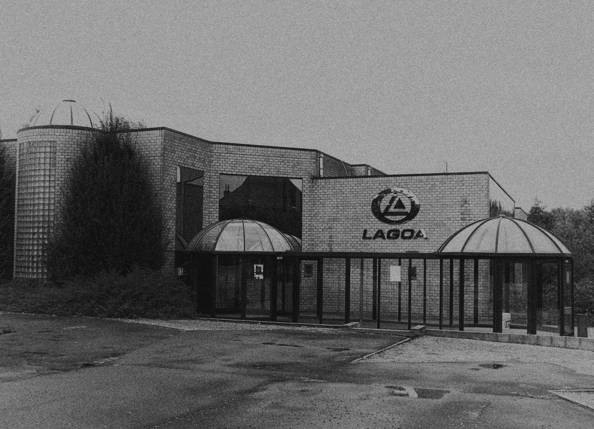
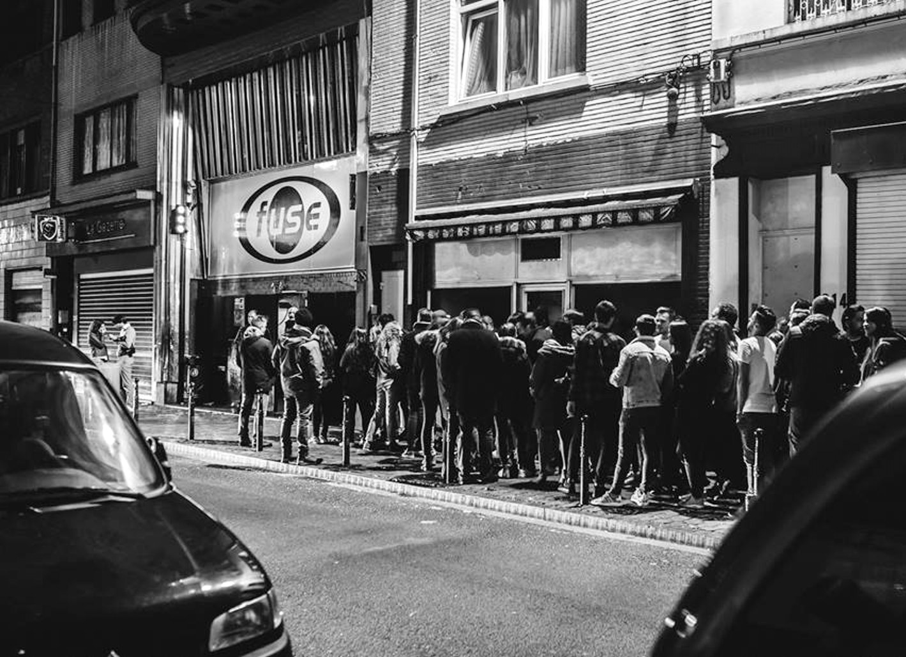
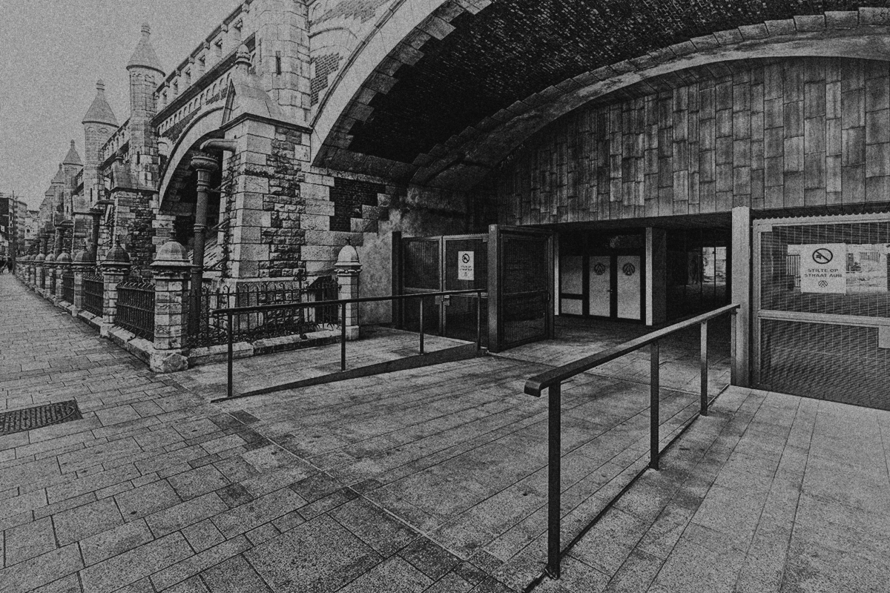

Lagoa

Lagoa is gesitueerd in Menen en werd opgericht in 1990. Het werd snel een van de bekenste clubs van het land. Wegens slechte reputatie, viel het bezoekersaantal van de club terug. Kort daarna moest het zelf zijn deuren sluiten. Sinds 2016 is de club heropend, en sindsdien trekt het wekelijks duizenden bezoekers van alle hoeken van het land.
- Positief
- Algemeen
- Duidelijke navigatiebalk (bovenaan).
- Adres staat onderaan vermeld samen met een link naar de Facebookpagina.
- Homepage
- Korte informatie over de venue.
- De eerst volgende evenementen worden op de homepage vermeld.
- Events
- Duidelijke lijst van nog te komen evenementen.
- Handige link om direct door te klikken naar het Facebookevent.
- Pictures
- Mooie en duidelijke lijst foto's vorigie evenementen.
- Info
- Adres en telefoonnummer makkelijk terug te vinden.
- Link naar Google Maps
- Link naar een PDF-document met de huisregels.
- Contact-formulier
- Extra informatie over de venue.
- Negatief
- Algemeen
- Geen zoekbalk.
- Site kan alleen in het Engels weergegeven worden.
- Events
- Vorige evenementen zijn nergens terug te vinden.
- Geen mogelijkheid om tickets te kopen via de evenementen.
Fuse

Fuse, gelegen in hartje Brussel, is een van de langstgeopende clubs in België. De 'techno-only' club werd pgericht in 1994 en heeft een maximumcapaciteit van 1200 personen.
- Positief
- Algemeen
- Duidelijke navigatiebalk (bovenaan) met meerdere opties wanneer je er met de muis overzweeft.
- Er is een zoekbalk aanwezig.
- Subscribe knop om je in te schrijven voor de nieuwsbrief
- Op de meeste pagina's staan de eerstvolgende evenementen aan de rechterzijkant.
- Homepage
- De eerst volgende evenementen worden op de homepage vermeld.
- Knop om door te klikken naar alle evenementen.
- Events
- Duidelijke lijst van nog te komen evenementen.
- Alle vorige evenementen kan je bekijken.
- Je kan klikken op de evenementen om zo extra informatie te krijgen.
- Tickets kunnen besteld worden via deze pagina.
- In 3 Tracks
- Originele manier om de artiesten die op hun evenementen spelen voor te stellen.
- Info
- Adres en telefoonnummer makkelijk terug te vinden.
- Een FAQ met interessante informatie is makkelijk terug te vinden.
- Negatief
- Algemeen
- Site kan alleen in het Engels weergegeven worden.
- Foto's
- Er zijn foto's van vorige evenementen beschikbaar, maar deze zijn verouderd (laatste zijn van 2016).
- Info
- Geen link naar Google Maps.
- Geen contact-formulier.
Ampere

- Positief
- Algemeen
- Duidelijke navigatiebalk (bovenaan).
- Adres staat onderaan vermeld samen met een link naar de Facebookpagina.
- Homepage
- Slideshow met eerst volgende evenementen worden op de homepage vermeld.
- Knop om door te klikken naar alle evenementen.
- Events
- Duidelijke lijst van nog te komen evenementen.
- Alle vorige evenementen kan je bekijken.
- Je kan klikken op de evenementen om zo extra informatie te krijgen.
- Tickets kunnen besteld worden via de site.
- Info en news
- Pagina met nieuwigheden is overzichtelijk gestructureerd.
- Adres is makkelijk terug te vinden.
- Satelietfoto
- Contact-formulier
- Negatief
- Algemeen
- Site kan alleen in het Engels weergegeven worden.
- Foto's
- Er zijn geen foto's van vorige evenementen beschikbaar.